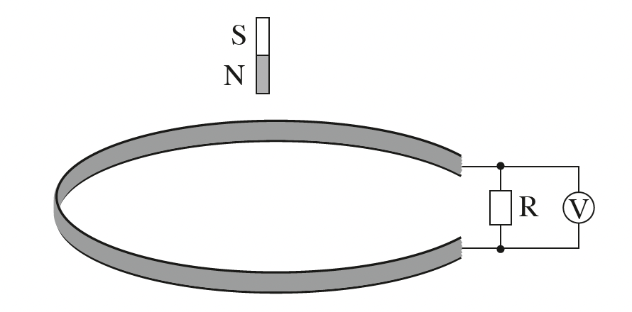
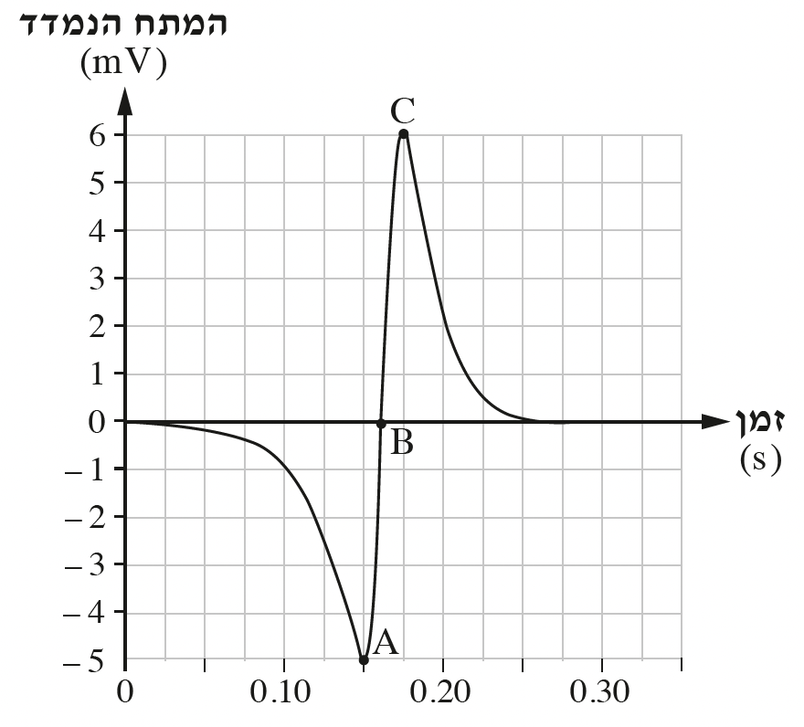

שאלה 6
משחררים מגנט מנקודה הנמצאת מעל כריכה מעגלית מוליכה (ראו תרשים 1). הניחו כי במהלך נפילתו המגנט אינו מסתובב והכוחות המגנטיים הפועלים עליו ניתנים להזנחה. עקב כך תנועתו של המגנט היא "נפילה חופשית" בקירוב.
הכריכה מחוברת למעגל חשמלי ובו נגד R וחיישן מתח V המחובר למחשב. החיישן מודד את המתח בין קצות הנגד.

במהלך נפילת המגנט מתקבל על צג המחשב הגרף המוצג בתרשים 2 שלפניכם.

השתמשו בחוק פארדיי או בחוק לנץ או בשני החוקים כדי לענות על הסעיפים שלפניכם.
הסבירו מדוע נוצר מתח בין קצות הנגד. (5 נקודות)
מהו כיוון השדה המגנטי המושרה הנוצר בתוך הכריכה במהלך התקרבות המגנט לכריכה? הסבירו את תשובתכם. (6 נקודות)
במהלך תנועת המגנט, המתח הנמדד משתנה משלילי לחיובי. הסבירו מדוע. (5 נקודות)
המתח המקסימלי הנמדד בעת יציאת המגנט מן הכריכה (נקודה C בגרף) גדול מן הערך המוחלט של המתח בכניסתו לכריכה (נקודה A בגרף). הסבירו מדוע. (7 נקודות)
בלא קשר לנתוני השאלה, הראו כי אפשר להציג שטף מגנטי ביחידות V · s (וולט כפול שנייה). (5 נקודות)
היעזרו בגרף וחשבו בקירוב את השינוי בשטף המגנטי במהלך תנועת המגנט במשך 0.15 השניות הראשונות. (5 1⁄3 נקודות)